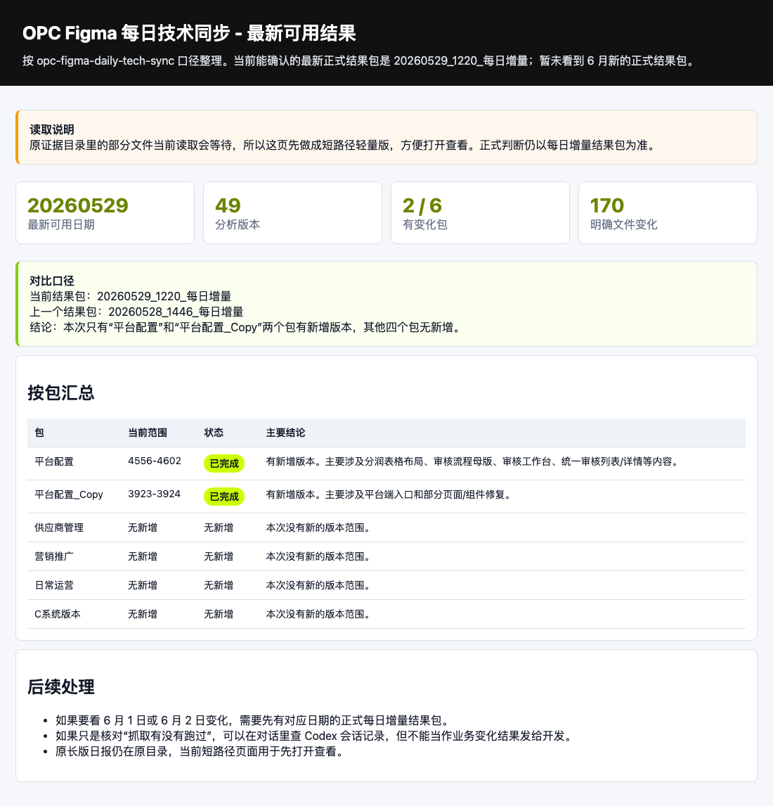
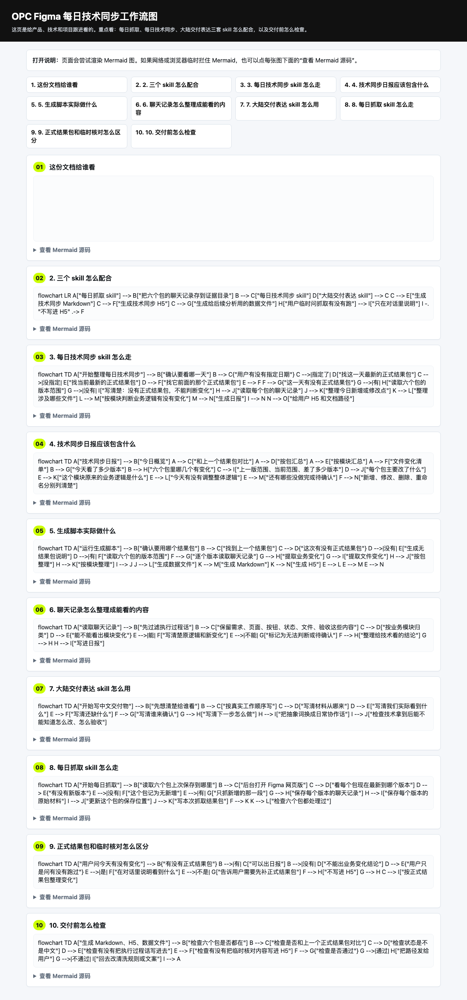
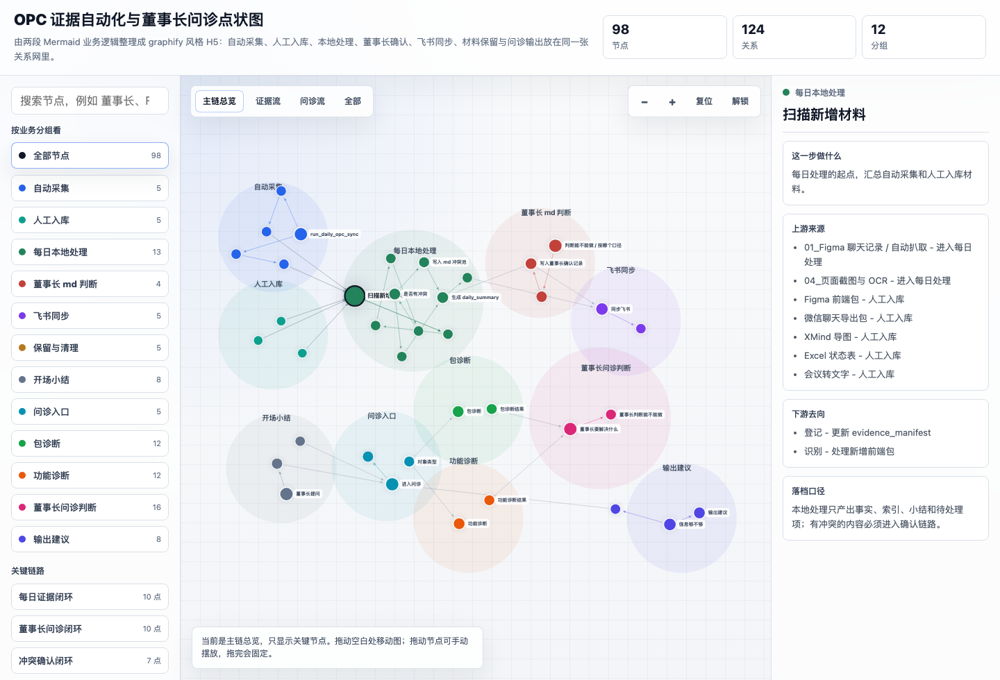
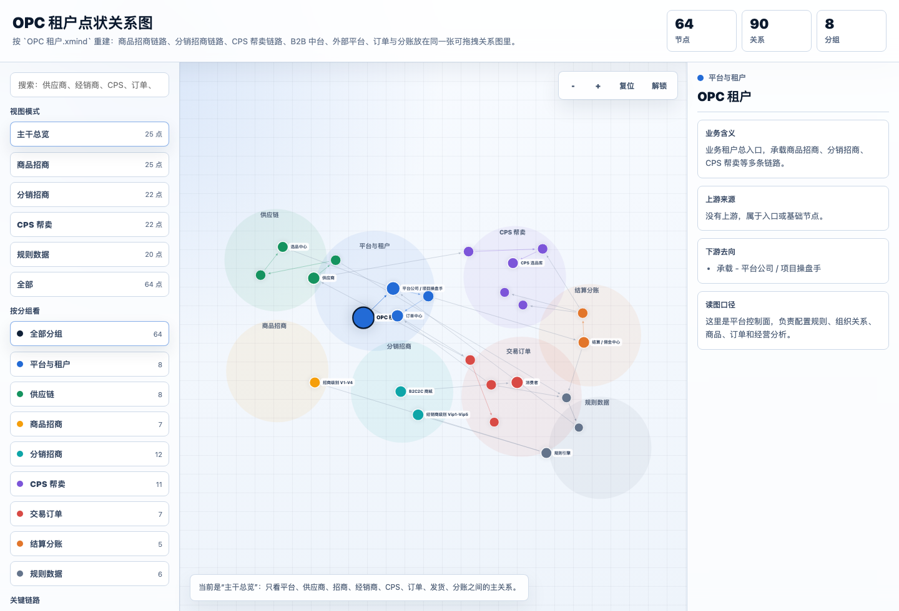

20项目/产物组
14业务域功能模块
6公开 H5 Demo
30成就素材条目
13失败复盘条目
这个仓库证明什么
我把分散在会议、Figma Make、XMind、Excel、前端包和 Codex session 里的 OPC 项目材料，整理成可追踪的业务地图、功能模块、证据索引、展示页面和简历素材库。
- 复杂业务拆解：租户、渠道、商品、供应商、分润、履约。
- AI 工作流产品化：证据库、每日增量、诊断端、Skill 工作流。
- 公开表达：把内部项目材料脱敏后整理成可浏览作品集。
- 工程判断：把宽扫卡顿、GitHub 证据缺口、Excel 脱敏、Pages 构建延迟、提交元数据等失败写成可复用经验。
工程证据入口
H5 Demo



H5
H5